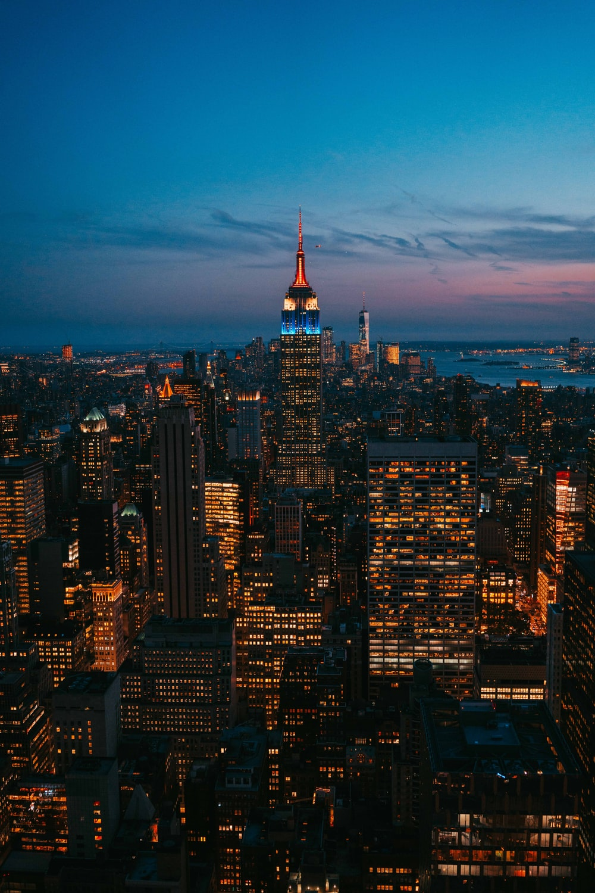
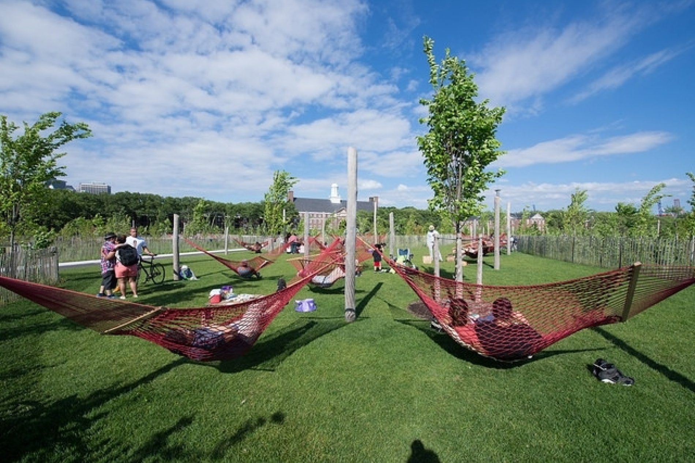

Lunch: BBQ Chicken Ktown NYC's
Dinner: Five Senses
Dessert: Grace Street Coffee & Desserts
42nd Street is a major crosstown street in the New York City borough of Manhattan, running primarily in Midtown Manhattan and Hell's Kitchen. The street is the site of some of New York's best known buildings, including (east to west) the headquarters of the United Nations, Chrysler Building, Grand Central Terminal, New York Public Library Main Branch, Times Square, and the Port Authority Bus Terminal. The street is known for its theaters, especially near the intersection with Broadway at Times Square, and as such is also the name of the region of the theater district (and, at times, the red-light district) near that intersection
World Trade Center is a terminal station on the PATH system. It is located in the World Trade Center complex, within the Financial District neighborhood of Manhattan in New York City. It is served by the Newark–World Trade Center line on weekdays and holiday weekends, as well as by the Hoboken–World Trade Center line on weekdays, and is the eastern terminus of both.
Central Park is an urban park in Manhattan, New York City, located between the Upper West Side and the Upper East Side. Central Park is the most visited urban park in the United States, with an estimated 37.5–38 million visitors annually, and one of the most filmed locations in the world. Central Park is the fifth-largest park in New York City by area, covering 843 acres (3.41 km2).
The Empire State Building is a 102-story[c] Art Deco skyscraper in Midtown Manhattan, New York City. It was designed by Shreve, Lamb and Harmon and completed in 1931. The building has a roof height of 1,250 feet (380 m) and stands a total of 1,454 feet (443.2 m) tall, including its antenna. Its name is derived from "Empire State", the nickname of New York. The Empire State Building stood as the world's tallest building for nearly 40 years until the construction of the World Trade Center's North Tower in Lower Manhattan in late 1970.
The Flatiron Building, originally the Fuller Building,[A] is a triangular 22-story,[5] 285-foot (86.9 m) tall steel-framed landmarked building located at 175 Fifth Avenue in the Flatiron District neighborhood of the borough of Manhattan, New York City. Upon completion in 1902, it was one of the tallest buildings in the city at 20 floors high[6] and one of only two "skyscrapers" north of 14th Street – the other being the Metropolitan Life Insurance Company Tower, one block east. The building sits on a triangular block formed by Fifth Avenue, Broadway, and East 22nd Street – where the building's 87-foot (27 m) back end is located – with East 23rd Street grazing the triangle's northern (uptown) peak. As with numerous other wedge-shaped buildings, the name "Flatiron" derives from its resemblance to a cast-iron clothes iron.[7]
Rockefeller Center is a large complex consisting of 19 commercial buildings covering 22 acres (89,000 m2) between 48th Street and 51st Street in Midtown Manhattan, New York City. The 14 original Art Deco buildings, commissioned by the Rockefeller family, span the area between Fifth Avenue and Sixth Avenue, split by a large sunken square and a private street called Rockefeller Plaza. Later additions include 75 Rockefeller Plaza across 51st Street at the north end of Rockefeller Plaza, and four International Style buildings located on the west side of Sixth Avenue.
Times Square is a major commercial intersection, tourist destination, entertainment center, and neighborhood in the Midtown Manhattan section of New York City, at the junction of Broadway and Seventh Avenue. Brightly lit by numerous billboards and advertisements, it stretches from West 42nd to West 47th Streets,[2] and is sometimes referred to as "the Crossroads of the World",[3] "the Center of the Universe",[4] "the heart of the Great White Way",[5][6][7] and "the heart of the world".[8] One of the world's busiest pedestrian areas,[9] it is also the hub of the Broadway Theater District[10] and a major center of the world's entertainment industry.[11] Times Square is one of the world's most visited tourist attractions, drawing an estimated 50 million visitors annually.[12] Approximately 330,000 people pass through Times Square daily,[13] many of them tourists,[14] while over 460,000 pedestrians walk through Times Square on its busiest days.
The Statue of Liberty (Liberty Enlightening the World; French: La Liberté éclairant le monde) is a colossal neoclassical sculpture on Liberty Island in New York Harbor in New York, in the United States. The copper statue, a gift from the people of France to the people of the United States, was designed by French sculptor Frédéric Auguste Bartholdi and its metal framework was built by Gustave Eiffel. The statue was dedicated on October 28, 1886.
The Orchid Show is a display of floral arrangements and artistic installations at Enid A. Haupt Conservatory plus evening entertainment.
If you crave an escape from the city that won’t land you in debt, head to the ever-changing urban oasis of Governors Island, NY which combines park, concert venue, adult playground and outdoor art space into a single lovely haven for adventure.
